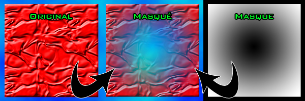
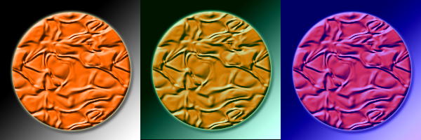

Bonjour !! Soyez les bienvenus dans ce mini-tuto qui va vous apprendre à modifier une image pixel par pixel en SDL.
Qu'est-ce que la SDL ?
:o ... Hélas, ceci est un mini-tuto et je vais me concentrer sur l'essentiel. :) Donc si vous ne savez pas ce que c'est que le C, la SDL, pas la peine de s'embêter à lire ce tutoriel, il ne vous sera pas d'une grande aide. Je vous conseille plutôt d'aller voir le très bon tutoriel de M@teo21 ici.
Les pré requis :
Et bien il faut connaître à fond le tutoriel de M@teo21 sur le C/C++ :) Vous devez disposer d'un IDE C++, avec la SDL installée.
Pour ce tutoriel, je vais partir du principe que vous n'êtes plus tout à fait des zéros ;) .
Voici notre problème principal :
Lorsque j'utilise la SDL, comment faire pour modifier mes images en direct, les assombrir, enlever la moitié des pixels, dessiner un éléphant rose ?
Bon pour l'éléphant rose, je cherche encore :p .
Comment faire ?
Le principe est extrêmement simple :
Vous savez naturellement ce qu'est une surface en SDL :D . (Sinon, allez hop au galop on va relire le cours ici)
Une surface est un ensemble de pixels. Elle est composée de n pixels, avec n = son nombre de pixels en largeur multiplié par son nombre de pixels en hauteur.
Qu'est-ce qu'un pixel ? C'est un point sur l'écran :p . Dans une surface, il contient 4 informations : une valeur en rouge, une valeur en vert, une valeur en bleu, et une valeur en alpha. Je suppose que RVB, vous voyez ce que c'est ;) .
Mais Alpha, c'est quoi ce machin la ?
Et bien cela représente le degré de transparence (entre 0 et 255) du pixel. Avec 255, le pixel est opaque, avec 0 il est transparent.
Le souci c'est qu'il parle d'une transparence alpha s'appliquant de manière globale, à une image entière. Il est possible de mettre une valeur alpha différente pour chaque pixel, c'est d?ailleurs le principe des masques. Je ne vais pas m'appesantir sur le sujet pour le moment, sachez seulement que ça existe, voici d?ailleurs une image expliquant assez clairement comment fonctionne un masque :

Ca va jusque là ;) ? J'espère... :-°
Qu'allons nous donc faire ?
Très simple :
1)Je prends ma surface. 2)Je parcours ma surface suivant l'axe des X et l'axe des Y, et je modifie chaque pixel comme je l'entends. 3)Je libère ma surface.
Cependant, il y a quand même quelques complications :euh: .
En effet, pour modifier un pixel, il faut récupérer l'adresse de ce pixel dans la surface, puis récupérer la valeur représentant la couleur du pixel, la décomposer suivant ses quatre composantes, modifier ces composantes, les réunir en une seule valeur, et renvoyer cette information à l?adresse du pixel.
Pfiou... :euh: ça m'a pas l'air si simple que ça finalement :euh:
Ne vous inquiétez pas, on va réussir à simplifier grandement le problème. En effet, vous n'êtes pas les premiers à vouloir modifier une image pixel par pixel. Dans la documentation de la SDL, les exemples de codes pour modifier un pixel sont fournis. Et une fois qu'on les a, tout se simplifie !!
Donc merci la doc SDL et merci Internet, ça prémache le boulot :D :D
Bon, et bien on a tout vu d'un point de vue théorique. Si c'est pas clair... :o Je pense que ça le deviendra avec l'application !! C'est partiii !! :p
Dans cette seconde partie, nous allons étudier toutes les petites briques à assembler pour créer un superbe lego.
Lesquelles ? Haha !! Grande question ;) . En fait, il nous faut une fonction pour connaître la couleur d'un pixel, et une fonction pour modifier sa couleur.
Et c'est la partie la plus difficile de ce tutoriel. En effet, ce sont des notions que vous n'avez pas forcement vus avec M@teo21, et qui ne sont pas évidentes à comprendre.
Je vous propose donc d'utiliser ces fonctions comme des boites noires :euh: . On se fiche de savoir comment elles fonctionnent, du moment qu'elles marchent autant s'en servir. Ce n'est pas très déontologique, mais ça va nous permettre d'avancer plus vite.
J'ai décidé de quand même commenter le code, si vous maitrisez les pointeurs et les zones de mémoires, le fonctionnement devrait vous paraitre plus clair.
D'abord, récupérer la couleur d'un pixel :
/* ********************************************************************* */
/*obtenirPixel : permet de récupérer la couleur d'un pixel
Paramètres d'entrée/sortie :
SDL_Surface *surface : la surface sur laquelle on va récupérer la couleur d'un pixel
int x : la coordonnée en x du pixel à récupérer
int y : la coordonnée en y du pixel à récupérer
Uint32 resultat : la fonction renvoie le pixel aux coordonnées (x,y) dans la surface
*/
Uint32 obtenirPixel(SDL_Surface *surface, int x, int y)
{
/*nbOctetsParPixel représente le nombre d'octets utilisés pour stocker un pixel.
En multipliant ce nombre d'octets par 8 (un octet = 8 bits), on obtient la profondeur de couleur
de l'image : 8, 16, 24 ou 32 bits.*/
int nbOctetsParPixel = surface->format->BytesPerPixel;
/* Ici p est l'adresse du pixel que l'on veut connaitre */
/*surface->pixels contient l'adresse du premier pixel de l'image*/
Uint8 *p = (Uint8 *)surface->pixels + y * surface->pitch + x * nbOctetsParPixel;
/*Gestion différente suivant le nombre d'octets par pixel de l'image*/
switch(nbOctetsParPixel)
{
case 1:
return *p;
case 2:
return *(Uint16 *)p;
case 3:
/*Suivant l'architecture de la machine*/
if(SDL_BYTEORDER == SDL_BIG_ENDIAN)
return p[0] << 16 | p[1] << 8 | p[2];
else
return p[0] | p[1] << 8 | p[2] << 16;
case 4:
return *(Uint32 *)p;
/*Ne devrait pas arriver, mais évite les erreurs*/
default:
return 0;
}
}
Que doit t'on retenir ?
- Cette fonction reçoit une surface en paramètre, ainsi que la position en X et en Y du pixel sur l'image (rappel : le point de coordonnées 0,0 est en haut à gauche de l'image). - Elle retourne un entier qui décrit la couleur du pixel (rouge, vert, bleu et alpha).
Donc, sur le même principe, voici comment modifier un pixel :
/* ********************************************************************* */
/*definirPixel : permet de modifier la couleur d'un pixel
Paramètres d'entrée/sortie :
SDL_Surface *surface : la surface sur laquelle on va modifier la couleur d'un pixel
int x : la coordonnée en x du pixel à modifier
int y : la coordonnée en y du pixel à modifier
Uint32 pixel : le pixel à insérer
*/
void definirPixel(SDL_Surface *surface, int x, int y, Uint32 pixel)
{
/*nbOctetsParPixel représente le nombre d'octets utilisés pour stocker un pixel.
En multipliant ce nombre d'octets par 8 (un octet = 8 bits), on obtient la profondeur de couleur
de l'image : 8, 16, 24 ou 32 bits.*/
int nbOctetsParPixel = surface->format->BytesPerPixel;
/*Ici p est l'adresse du pixel que l'on veut modifier*/
/*surface->pixels contient l'adresse du premier pixel de l'image*/
Uint8 *p = (Uint8 *)surface->pixels + y * surface->pitch + x * nbOctetsParPixel;
/*Gestion différente suivant le nombre d'octets par pixel de l'image*/
switch(nbOctetsParPixel)
{
case 1:
*p = pixel;
break;
case 2:
*(Uint16 *)p = pixel;
break;
case 3:
/*Suivant l'architecture de la machine*/
if(SDL_BYTEORDER == SDL_BIG_ENDIAN)
{
p[0] = (pixel >> 16) & 0xff;
p[1] = (pixel >> 8) & 0xff;
p[2] = pixel & 0xff;
}
else
{
p[0] = pixel & 0xff;
p[1] = (pixel >> 8) & 0xff;
p[2] = (pixel >> 16) & 0xff;
}
break;
case 4:
*(Uint32 *)p = pixel;
break;
}
}
De même : Cette fonction reçoit en paramètre une surface, les coordonnées x et y du pixel, et la couleur que l'on veut y mettre.
L'intérêt principal de ces fonctions ?
Elles sont faites pour fonctionner avec n'importe quel format d'image, vous n'aurez jamais de couleurs faussées avec ces fonctions.
Mais... Qu'est-ce qu'un Uint32 ???
C'est un entier d'un type un peu particulier (non signé et enregistré sur 32 bits), créé par la bibliothèque SDL (il existe des Uint8, des Uint16, etc.).
Un entier non signé ne peut contenir que des valeurs positives. 32 bits indiques le nombre de valeurs qu'il peut prendre. Un Uint32 peut prendre des valeurs entre 0 et (2^32) -1. Un Unit8 peut prendre des valeurs entre 0 et (2^8) -1, c'est à dire entre 0 et 255.
Vous devez donc récupérer la valeur d'un pixel avec ce genre de code :
Uint32 pixel;
/*Pour récupérer le code couleur d'un pixel*/
pixel=obtenirPixel(surface,x,y);
/*Et pour changer la valeur d'un pixel*/
definirPixel(surface,x,y,pixel);
Maintenant bien sur, ce qui nous intéresse, c'est modifier la valeur de la variable pixel.
Donc dans un premier temps, il faut récupérer les composantes rouge, vert, bleu et alpha du pixel, puis les modifier, et enfin les réinjecter.
On va utiliser les fonctions SDL_GetRGBA et SDL_MapRGBA.
Il faut lui passer les 4 variables de composante par référence. Voici un code relativement clair, du moins je l'espère :
/*Composantes pouvant prendre des valeurs entre 0 et 255*/
Uint8 r,g,b,a;
/* On extrait de pixel la valeur de chaque composante*/
SDL_GetRGBA(pixel, surface->format, &r, &v, &b, &a);
/* On modifiera ici les variables r, v, b et a.*/
/*Et une fois qu'on les a modifiées, on réinjecte dans pixel.*/
pixel=SDL_MapRGBA(surface->format, r, v, b, a);
Petite précision : 'surface' est le nom de votre surface :p , et format permet à la fonction de connaître la façon dont sont enregistrés vos pixels (nous... on s'en fout :p ). Il faut juste retenir que le premier paramètre est sous la forme 'nomDeLaSurface->format'.
Heu.. Serait-il possible de résumer ?
Bien sur, bien sur :
Uint32 pixel;
Uint8 r,g,b,a;
int x,y;
x=3;
y=5;
SDL_LockSurface(surface); /*On bloque la surface*/
pixel=obtenirPixel(surface,x,y);
SDL_GetRGBA(pixel, surface->format, &r, &v, &b, &a);
/*Ici, on mettra du code pour modifier les composantes du pixel.*/
/*Et une fois qu'on les a modifiés :*/
pixel=SDL_MapRGBA(surface->format, r, v, b, a);
/*Et pour changer la valeur d'un pixel :*/
definirPixel(surface,x,y,pixel);
SDL_UnlockSurface(surface); /*On libère la surface, elle peut être utilisée pour une autre tâche*/
C'est à peu près clair :) ? Bon bah on va pouvoir continuer !! C'est bientôt fini, ne vous inquiétez pas !! :D
Donc désormais, nous avons récupéré r, v, b, et a qui sont les composantes de notre pixel.
Ces composantes sont des Uint8. Ils sont stockés sur 8 bits. Donc... ? Et bien ils peuvent prendre chacun 256 valeurs différentes. C'est à dire une valeur entre 0 et 255.
Comment ça je l'ai déjà dit ? :-° C'est pour que ça rentre mieux :D :D .
Le 0 indique l'absence de la composante, (et la transparence totale pour la composante alpha), et le 255 indique le maximum de cette couleur (et opaque pour la composante alpha).
Quelques exemples :
r,g,b,a :
0,0,0,255 : Aucune couleur --> noir. Et opaque. 255,255,255,255 : Toutes les couleurs --> de la lumière blanche !! Et opaque aussi bien sur. 255,0,0,128 : Seule la composante rouge est présente pour les couleurs, c'est donc un rouge. Cependant, ce pixel est à moitié transparent (128=255/2) donc il laisse filtrer une partie de la couleur du pixel sur lequel il sera collé. 255,255,255,0 : Un pixel de couleur blanche... Et totalement transparent !! Donc... Il ne sera pas visible !! :)
C'est compris ? ;)
Si par exemple vous prenez un pixel qui a une composante rouge de 150, et que vous lui additionnez 150, vous n'obtiendrez ni 300 (puisque le maximum est 255), ni 255, mais plutôt... N'importe quoi :D .
La solution ? Convertir les Uint8 en int lors des calculs.
Concrètement, voici comment faire :
int tampon; /*Variable entière qui sert de tampon*/
int ajout;
Uint8 composante,resultat;
composante=155;
ajout=120;
tampon=(int)composante + ajout;
/*On fait en sorte que tampon reste dans l'intervalle [0,255] */
if (tampon>255) {tampon=255;} else if (tampon<0) {tampon=0;}
/*Avec l'opérateur cast (Uint8) on tranforme tampon en un entier de type Uint8*/
resultat=(Uint8)tampon;
Bon et bien vous avez tous les outils en main il me semble.
Comment modifier l'intégralité de l'image ?
Par exemple :
int x,y;
SDL_LockSurface(surface); /*On bloque la surface*/
for (y=0;y<surface->h;y++)
{
for (x=0;x<surface->w;x++)
{
/*Ici on modifie chaque pixel*/
}
}
SDL_UnlockSurface(surface); /*On libère la surface, elle peut être utilisée*/
Dernier point, mais non des moindres : une fois une image chargée en mémoire, il peut être intéressant d'en réaliser une copie, dans une autre image, afin de modifier cette deuxième image et garder l'original intact.
Voici donc le principe de fonctionnement : 1) Charger l'image originale 2) Créer une surface vide dans la nouvelle image, possédant les caractéristiques de l'image originale 3) Copier l'image originale dans la nouvelle image.
C'est donc relativement simple, voici le code :
/*On déclare les pointeurs sur des surfaces que l'on va utiliser*/
SDL_Surface *image = NULL;
SDL_Surface *copie = NULL;
/*On charge l'image à copier*/
image = SDL_LoadBMP("image.bmp");
/*On créé une surface vide de la taille de l'image à copier*/
copie = SDL_CreateRGBSurface(SDL_HWSURFACE, image->w, image->h, 32, MASQUE_ROUGE, MASQUE_VERT, MASQUE_BLEU, MASQUE_ALPHA);
/*On copie l'image originale*/
SDL_BlitSurface(image, NULL, copie, NULL);
Il est probable que la fonction SDL_CreateRGBSurface vous paraisse bien étrange. Voici ce qu'en dit M@teo21 dans son cours :
Citation : M@teo21
Cette fonction prend... beaucoup de paramètres :p (8 !) D'ailleurs, peu d'entre eux nous intéressent pour l'instant, donc je vais éviter de vous détailler ceux qui ne nous serviront pas de suite. Comme en C nous sommes obligés d'indiquer tous les paramètres (les paramètres facultatifs n'existent qu'en C++), nous enverrons la valeur 0 quand le paramètre ne nous intéresse pas.
Regardons de plus près les 4 premiers paramètres, les plus intéressants :
* Une liste de flags (des options). Vous avez le choix entre : o SDL_HWSURFACE : la surface sera chargée en mémoire vidéo. Il y a moins d'espace dans cette mémoire que dans la mémoire système (quoique, avec les cartes 3D qu'on sort de nos jours...), mais cette mémoire est plus optimisée et accélérée. o SDL_SWSURFACE : la surface sera chargée en mémoire système où il y a beaucoup de place, mais cela obligera votre processeur à faire plus de calculs. Si vous aviez chargé la surface en mémoire vidéo, c'est la carte 3D qui aurait fait la plupart des calculs.
* La largeur de la surface (en pixels) * La hauteur de la surface (en pixels) * Le nombre de couleurs (en bits / pixel)
Voici donc comment on alloue notre nouvelle surface en mémoire :
Les 4 derniers paramètres sont mis à 0 comme je vous l'ai dit car ils ne nous intéressent pas.
Effectivement. :) N'oubliez pas que lorsque l'on manipule des images, on se rapproche beaucoup de tout ce qui est bas niveau.
Dans la plupart des cas, laisser les 4 derniers paramètres à 0 convient parfaitement.
Sauf dans un : lorsque l'on veut modifier la transparence alpha d'une image, pixel par pixel !!
Si l'on veut que nos modifications de transparence soient prises en compte lors d'un blit (affichage d'une image dans une autre), il va nous falloir modifier les 4 derniers paramètres, pour indiquer la façon dont les données sont enregistrées.
Bien sur, j'ai utilisée des constantes, que je définis ainsi au début de mon programme :
/*Suivant l'architecture de la machine, deux manières d'enregistrer des données en mémoire*/
#if SDL_BYTEORDER == SDL_BIG_ENDIAN
#define MASQUE_ROUGE 0xff000000
#define MASQUE_VERT 0x00ff0000
#define MASQUE_BLEU 0x0000ff00
#define MASQUE_ALPHA 0x000000ff
#else
#define MASQUE_ROUGE 0x000000ff
#define MASQUE_VERT 0x0000ff00
#define MASQUE_BLEU 0x00ff0000
#define MASQUE_ALPHA 0xff000000
#endif
Tout ce que vous devez retenir, c'est qu'il vous faudra mettre ces 4 constantes en derniers paramètres pour que la modification pixel par pixel de transparence alpha fonctionne.
A quoi ça peut bien servir ?
Et bien, par exemple, cela peut permettre de réaliser des masques, c'est à dire rendre une image plus ou moins transparente en divers endroits.
Et voila !! Il ne vous reste plus qu'à mélanger tout ça pour obtenir de superbes effets.
Nous venons de voir comment réaliser une balance des couleurs en C :) .
Les mécanismes de modification d'une image pixel par pixel doivent commencer à vous paraître plus évidents, mais il ne faut pas s'arrêter en si bon chemin !! Nous allons donc continuer à appliquer les bases pratiques et théoriques que nous avons vu précédemment.
Dans ce TP, nous allons voir :
comment modifier la luminosité d'une image
comment ajouter un masque de transparence sur une image
comment appliquer un pot de peinture sur une image
Modifier la luminosité d'une image
Première question : qu'est-ce donc que la luminosité ?
Je suppose que nous sommes tous d'accord pour dire qu'une image blanche est très lumineuse, tandis qu'une image noire n'a aucune luminosité.
Donc, pour éclaircir une image, il faut la faire tendre vers le blanc, tandis que pour l'assombrir, il suffit de la faire tendre vers le noir.
Sachant que le blanc est du (255,255,255) et le noir du (0,0,0), on va donc ajouter ou enlever une certaine quantité alpha à chaque composante de couleur de chaque pixel de l'image, la même pour tous.
Mais, ça ressemblerait pas à la balance des couleurs, ça ?
Bon, voici le code, mais normalement je ne devrais même pas avoir à vous le donner :D .
/* ********************************************************************* */
/*luminosite : permet d'ajouter ou d'enlever de la lumière à toute l'image.
Paramètres d'entrée/sortie :
SDL_Surface *surface : la surface à modifier
int alpha : La quantité de lumière que l'on veut ajouter ou soustraire (entre -255 et +255)
*/
void luminosite(SDL_Surface *surface, int alpha)
{
/*La luminosité est en fait une balance des couleurs avec un ajout uniforme*/
balanceDesCouleurs(surface, alpha, alpha, alpha);
}
Ajouter un masque sur une image
Préliminaires
Je dois reconnaitre que l'effet précédent n'était pas d'une complexité affolante :-° . Nous allons maintenant nous intéresser à quelque chose qui nécessite un peu plus de réflexion.
Comme vous le savez désormais, les images possèdent une couche alpha. Cette couche alpha, qui correspond à la transparence de l'image, peut être chargée en même temps que l'image, principalement sur les images au format PNG, elle peut aussi être définie de manière globale, en utilisant la fonction SDL_SetAlpha, permettant par exemple de rendre une image à moitié transparente.
Mais il existe un troisième cas de figure :) . Imaginez que l'on ai une image, que l'on veuille rendre totalement transparente en son milieu, puis de moins en moins transparente à mesure qu'on s'approche des bords de l'image.
Comment y parvenir ??
La solution, c'est d'utiliser une image, en niveaux de gris, qui servira de couche alpha à notre image. Ainsi, on charge une image normale, on charge un masque, de même taille, et on applique le masque sur l'image cible.
Ce masque en niveau de gris permet de définir la transparence de l'image cible en tout points. Chaque pixel du masque correspond à un pixel de l'image.
D'autres part, je vais considérer que le noir représente un pixel totalement transparent, tandis que le blanc représente un pixel opaque. J'ai fait ce choix pour des raisons de commodité, mais si ça vous dit de décider du contraire, libre à vous :D :D .
Heu... Tu pourrais préciser ?
Prenons un exemple : Si le pixel en haut à gauche de mon masque est blanc, alors le pixel en haut à gauche dans mon image sera totalement opaque. Sil le pixel en bas à droite de mon masque est noir, alors le pixel en bas à droite de mon image sera totalement transparent, il ne sera pas visible.
Je vous rappelle qu'une couleur grise possède la même valeur pour ses trois composantes rouge, vert et bleu.
Un dernier exemple : Si le pixel en haut à droite de mon masque est d'une couleur grise rouge=128, vert=128 et noir=128. On remarque que 128 est la moitié de 256, et qu'une composante peut prendre 256 valeurs. On en déduis que le pixel de l'image en haut à droite sera... à moitié transparent !
Comment procéder
1)Charger l'image source sur laquelle on veut appliquer un masque. 2)Charger le masque à appliquer sur l'image. Ce masque doit être en niveaux de gris. 3)Créer une image cible qui contiendra le résultat. 4)Copier l'image source dans l'image cible 5)Appliquer le masque à l'image cible : ->Parcourir l'image et le masque pixel par pixel ->Définir le niveaux de gris de chaque pixel du masque comme composante alpha de chaque pixel l'image cible.
En regardant bien, en fait, vous savez déjà tout faire !!
Voici comment se déroule les 4 premiers points :
/*On charge notre image, notez qu'elle fait 200*200 pixels*/
imgOriginale = SDL_LoadBMP("image.bmp");
/*On charge le masque, qui lui aussi fait 200*200 pixels*/
imgMasque = SDL_LoadBMP("masque.bmp");
/*On créé une surface vide de 200*200 dans l'image*/
imgAjoutMasque = SDL_CreateRGBSurface(SDL_HWSURFACE, imgOriginale->w, imgOriginale->h, 32, MASQUE_ROUGE, MASQUE_VERT, MASQUE_BLEU, MASQUE_ALPHA);
/*On y copie ensuite l'image originale*/
SDL_BlitSurface(imgOriginale, NULL, imgAjoutMasque, NULL);
/*On traite une image*/
/*On ajoute un masque à l'image*/
ajouterMasque(imgAjoutMasque, imgMasque);
Ah, petit rappel : il faut avoir déclarer ceci au début de votre fichier :
/*Suivant l'architecture de la machine, deux manières d'enregistrer des données en mémoire*/
#if SDL_BYTEORDER == SDL_BIG_ENDIAN
#define MASQUE_ROUGE 0xff000000
#define MASQUE_VERT 0x00ff0000
#define MASQUE_BLEU 0x0000ff00
#define MASQUE_ALPHA 0x000000ff
#else
#define MASQUE_ROUGE 0x000000ff
#define MASQUE_VERT 0x0000ff00
#define MASQUE_BLEU 0x00ff0000
#define MASQUE_ALPHA 0xff000000
#endif
C'est ce qui permet à la SDL de savoir comment sont stockées les données en mémoire, suivant l'architecture de votre machine. J'en ai déjà parlé dans la partie "Les bases techniques pour que ça fonctionne"
Bon, et maintenant, à vos claviers !! Normalement, vous devez avoir tous les outils nécessaires pour créer la fonction ajouterMasque !!
Allez, comme j'ai un bon fond, je vous la donne, pour que vous puissiez comparer avez votre code :) :
/* ********************************************************************* */
/*ajouterMasque : permet d'ajouter un masque en couche alpha sur une image source.
Le masque doit être en niveaux de gris ou en niveaux de rouge.
La couche alpha de la source n'est pas pris en compte.
Seul la couche rouge du masque est prise en compte.
Paramètres d'entrée/sortie :
SDL_Surface *source : l'image sur laquelle on va appliquer le masque
SDL_Surface *masque : le masque à appliquer sur l'image
*/
void ajouterMasque(SDL_Surface *source, SDL_Surface *masque)
{
int x,y;
Uint32 pixelS,pixelM;
Uint8 r,v,b,a,temp1,temp2;
/*Si les images ont les mêmes dimensions*/
if ((source->w==masque->w) && (source->h==masque->h))
{
/* On bloque les deux surfaces pour pouvoir travailler dessus */
SDL_LockSurface(source);
SDL_LockSurface(masque);
/*Double boucle pour parcourir l'intégralité de l'image.*/
for (y=0;y<source->h;y++)
{
for (x=0;x<source->w;x++)
{
/*On récupère les codes couleurs des pixels*/
pixelS=obtenirPixel(source,x,y);
pixelM=obtenirPixel(masque,x,y);
/*On extrait les composantes rouge, vert, bleu du pixel de l'image source*/
SDL_GetRGB(pixelS, source->format, &r, &v, &b);
/*On extrait la composante rouge du pixel du masque*/
/*Les deux autres couleurs ne nous interessent pas*/
/*L'image est censée être en niveaux de gris, donc rouge=vert=bleu*/
SDL_GetRGB(pixelM, masque->format, &a, &temp1, &temp2);
/*On retransforme les 4 composantes en un seul code couleur dans pixelS */
/*Notez qu'on a ajouté le a couche alpha (masque) aux 3 couleurs rouge vert bleu du pixel*/
pixelS=SDL_MapRGBA(source->format, r, v, b, a);
/*On injecte le code couleur pixel dans le pixel correspondant*/
definirPixel(source, x, y, pixelS);
}
}
/*On libère les surfaces, elle peuvent désormais être réutilisées pour autre chose*/
SDL_UnlockSurface(source);
SDL_UnlockSurface(masque);
}
}
Un incroyable pot de peinture
De quoi parles t'on ?
Le pot de peinture est un outil que l'on trouve dans la plupart des programmes de retouche d'image. Même paint en possède un !!
Nous allons attaquer le côté pratique avec la réalisation d'une fonction de Balance des couleurs.
Mais c'est quoi une balance des couleurs ?
C'est une fonction qui permet d'ajouter ou d'enlever une certaine dose de rouge, de vert et de bleu à une image.
Et GIMP alors, moi j'utilise que de l'open source ?
Cool ! Comment ça marche ?
On prend chaque pixel de l'image, et on lui ajoute ou enlève une certaine quantité de chaque composante (attention, on ne se préoccupe ici que des composantes rouge, vert et bleu, pas de la couche alpha).
C'est un simple fichier bitmap :) . Nous n'aurons donc pas besoin de la bibliothèque SDL_Image pour cet exemple.
Ensuite, voici le résultat à obtenir :
A CHANGER

A gauche, l'image originale. A droite, la version modifiée avec la balance des couleurs ^^ .
Voici le principe de l'algorithme utilisé : 1)On bloque la surface, pour pouvoir dessiner dessus. 2)On parcours la surface pixel par pixel, et on ajoute ou on enlève une certaine quantité de couleur à chaque composante 3)On débloque la surface
Bon et maintenant... A vos claviers !! :D :D
Heu... Je suis un peu perdu, je peux voir la solution ?
Pas de problèmes :p !! Voici l'intégralité du code, largement commenté. Il devrait être assez clair pour que vous compreniez tout au premier coup d'oeil.
/* ********************************************************************* */
/*Fichiers d'entête inclus*/
#include <stdlib.h>
#include <stdio.h>
#include <SDL/SDL.h>
/* ********************************************************************* */
/*Prototypes*/
/*Les commentaires sont dans les corps de fonction*/
/*Fonction de gestion système*/
void waitAndQuit();
/*Fonction de modification d'image*/
void balanceDesCouleurs(SDL_Surface *surface, int rAjout, int gAjout, int bAjout);
/*Fonctions utilisées par la fonction de modification d'image*/
Uint8 addVal(Uint8 composante, int valeur);
Uint32 obtenirPixel(SDL_Surface *surface, int x, int y);
void definirPixel(SDL_Surface *surface, int x, int y, Uint32 pixel);
/* ********************************************************************* */
/*main : fonction principale*/
int main(int argc, char **argv)
{
/* ************Déclaration des variables************ */
/*On déclare les trois surfaces qui vont nous servir :*/
/*L'écran, et l'image originale et l'image à modifier*/
SDL_Surface *ecran = NULL, *imgOriginale = NULL, *imgBalanceCouleurs = NULL;
/*Pour positionner les images*/
SDL_Rect position;
/* ************Initialisation*********************** */
/*On initialise la SDL.*/
SDL_Init(SDL_INIT_VIDEO);
/*On initialise l'écran*/
ecran = SDL_SetVideoMode(400, 200, 32, SDL_ANYFORMAT |
SDL_HWSURFACE );
/*On change le titre de la fenêtre*/
SDL_WM_SetCaption("Balance des couleurs", NULL);
/*On charge notre image, notez qu'elle fait 200*200 pixels*/
imgOriginale = SDL_LoadBMP("image.bmp");
/*On créé une surface vide de 200*200 pixels dans l'image*/
/*Notez que cette image n'aura pas besoin de transparence alpha, les 4 derniers paramètres sont donc à 0*/
imgBalanceCouleurs = SDL_CreateRGBSurface(SDL_HWSURFACE, imgOriginale->w, imgOriginale->h, 32, 0, 0, 0, 0);
/*On y copie ensuite l'image originale*/
SDL_BlitSurface(imgOriginale, NULL, imgBalanceCouleurs, NULL);
/* ************Modification de l'image************** */
/*On traite l'image*/
/*La balance des couleurs va enlever 10 en rouge, ajouter 100 en bleu et 20 en vert.*/
balanceDesCouleurs(imgBalanceCouleurs,-10, 100, 20);
/* ************Affichage du résultat**************** */
/*Position de l'image originale dans l'écran.*/
position.x=0;
position.y=0;
/*On copie l'image originale dans l'écran*/
SDL_BlitSurface(imgOriginale, NULL, ecran, &position);
/*Position de l'image modifiée*/
position.x=200;
position.y=0;
/*On copie l'image modifiée dans l'écran*/
SDL_BlitSurface(imgBalanceCouleurs, NULL, ecran, &position);
SDL_Flip(ecran);/* Force l'affichage. Facultatif ici, mais on ne sait jamais.*/
/* ************Nettoyage de la mémoire************** */
/*Une fois les images affichées, on n'a plus besoin d'elles*/
SDL_FreeSurface(imgOriginale);
SDL_FreeSurface(imgBalanceCouleurs);
/*On attend que l'utilisateur décide de quitter le programme*/
waitAndQuit();
return EXIT_SUCCESS;
}
/* ********************************************************************* */
/*waitAndQuit : permet d'attendre que l'utilisateur quitte le programme*/
void waitAndQuit()
{
SDL_Event event;
while ( event.type!= SDL_QUIT)
SDL_WaitEvent( &event );
SDL_Quit();
}
/* ********************************************************************* */
/*balanceDesCouleurs : permet d'ajouter ou d'enlever de la couleur à toute l'image.
Paramètres d'entrée/sortie :
SDL_Surface *surface : la surface à modifier
int rAjout : La quantité de rouge que l'on veut ajouter ou soustraire (entre -255 et +255)
int gAjout : La quantité de vert que l'on veut ajouter ou soustraire (entre -255 et +255)
int bAjout : La quantité de bleu que l'on veut ajouter ou soustraire (entre -255 et +255)
*/
void balanceDesCouleurs(SDL_Surface *surface, int rAjout, int gAjout, int bAjout)
{
/*x et y sont les index permettant de se déplacer dans l'image*/
int x,y;
/*r,g,b,a vont stocker les composantes d'un pixel*/
Uint8 r,g,b,a;
/*pixel stocke le code couleur d'un pixel*/
Uint32 pixel;
/*On bloque la surface pour pouvoir travailler dessus */
SDL_LockSurface(surface);
/*Double boucle pour parcourir l'intégralité de l'image.*/
for (y=0;y<surface->h;y++)
{
for (x=0;x<surface->w;x++)
{
/*On récupère le code couleur du pixel.*/
pixel=obtenirPixel(surface,x,y);
/*On extrait les composantes rouge, vert, bleu et alpha*/
SDL_GetRGBA(pixel, surface->format, &r, &g, &b, &a);
/*On ajoute/soustrait la quantité voulue aux 3 composantes rouge, vert, bleu.*/
r=addVal( r,rAjout);
g=addVal( g,gAjout);
b=addVal( b,bAjout);
/*On retransforme les 4 composantes en un seul code couleur dans pixel */
pixel=SDL_MapRGBA(surface->format, r, g, b, a);
/*On injecte le code couleur pixel dans le pixel correspondant*/
definirPixel(surface, x, y, pixel);
}
}
/*On libère la surface, elle peut désormais être réutilisée pour autre chose*/
SDL_UnlockSurface(surface);
}
/* ********************************************************************* */
/*addVal : ajoute une certaine valeur à une composante
en restant dans l'intervalle [0,255]
Paramètres d'entrée/sortie :
Uint8 composante : la composante à modifier
int valeur : la valeur à ajouter ou enlever
*/
Uint8 addVal(Uint8 composante, int valeur)
{
int tampon; /*Variable entière qui sert de tampon*/
tampon=(int)composante + valeur;
/*On fait en sorte que tampon reste dans l'intervalle [0,255] */
if (tampon>255) {tampon=255;} else if (tampon<0) {tampon=0;}
/*Avec l'opérateur cast (Uint8) on tranforme tampon en un entier de type Uint8*/
return (Uint8)tampon;
}
/* ********************************************************************* */
/*obtenirPixel : permet de récupérer la couleur d'un pixel
Paramètres d'entrée/sortie :
SDL_Surface *surface : la surface sur laquelle on va récupérer la couleur d'un pixel
int x : la coordonnée en x du pixel à récupérer
int y : la coordonnée en y du pixel à récupérer
Uint32 resultat : la fonction renvoie le pixel aux coordonnées (x,y) dans la surface
*/
Uint32 obtenirPixel(SDL_Surface *surface, int x, int y)
{
/*nbOctetsParPixel représente le nombre d'octets utilisés pour stocker un pixel.
En multipliant ce nombre d'octets par 8 (un octet = 8 bits), on obtient la profondeur de couleur
de l'image : 8, 16, 24 ou 32 bits.*/
int nbOctetsParPixel = surface->format->BytesPerPixel;
/* Ici p est l'adresse du pixel que l'on veut connaitre */
/*surface->pixels contient l'adresse du premier pixel de l'image*/
Uint8 *p = (Uint8 *)surface->pixels + y * surface->pitch + x * nbOctetsParPixel;
/*Gestion différente suivant le nombre d'octets par pixel de l'image*/
switch(nbOctetsParPixel)
{
case 1:
return *p;
case 2:
return *(Uint16 *)p;
case 3:
/*Suivant l'architecture de la machine*/
if(SDL_BYTEORDER == SDL_BIG_ENDIAN)
return p[0] << 16 | p[1] << 8 | p[2];
else
return p[0] | p[1] << 8 | p[2] << 16;
case 4:
return *(Uint32 *)p;
/*Ne devrait pas arriver, mais évite les erreurs*/
default:
return 0;
}
}
/* ********************************************************************* */
/*definirPixel : permet de modifier la couleur d'un pixel
Paramètres d'entrée/sortie :
SDL_Surface *surface : la surface sur laquelle on va modifier la couleur d'un pixel
int x : la coordonnée en x du pixel à modifier
int y : la coordonnée en y du pixel à modifier
Uint32 pixel : le pixel à insérer
*/
void definirPixel(SDL_Surface *surface, int x, int y, Uint32 pixel)
{
/*nbOctetsParPixel représente le nombre d'octets utilisés pour stocker un pixel.
En multipliant ce nombre d'octets par 8 (un octet = 8 bits), on obtient la profondeur de couleur
de l'image : 8, 16, 24 ou 32 bits.*/
int nbOctetsParPixel = surface->format->BytesPerPixel;
/*Ici p est l'adresse du pixel que l'on veut modifier*/
/*surface->pixels contient l'adresse du premier pixel de l'image*/
Uint8 *p = (Uint8 *)surface->pixels + y * surface->pitch + x * nbOctetsParPixel;
/*Gestion différente suivant le nombre d'octets par pixel de l'image*/
switch(nbOctetsParPixel)
{
case 1:
*p = pixel;
break;
case 2:
*(Uint16 *)p = pixel;
break;
case 3:
/*Suivant l'architecture de la machine*/
if(SDL_BYTEORDER == SDL_BIG_ENDIAN)
{
p[0] = (pixel >> 16) & 0xff;
p[1] = (pixel >> 8) & 0xff;
p[2] = pixel & 0xff;
}
else
{
p[0] = pixel & 0xff;
p[1] = (pixel >> 8) & 0xff;
p[2] = (pixel >> 16) & 0xff;
}
break;
case 4:
*(Uint32 *)p = pixel;
break;
}
}
Je tiens à ajouter une petite précision, pour les perfectionnistes : vous aurez remarqué que lorsque je parcours une image (avec les deux boucles for imbriquées), je la parcours selon les l'axe des y d'abord, et je fais varier l'axe des x ensuite.
Pourquoi ne fais t'on pas l'inverse ?
Et bien, vous pouvez sans hésiter inverser, cela ne posera aucun problème. Cependant, dans ce cas précis, pour des raisons d'optimisation liées à la façon dont les images sont stockées en mémoire, il est préférables de faire y d'abord, x ensuite.
Pourquoi ??
Hé hé... Si quelque chose ne vous parait pas clair, relisez les parties précédentes, tout est dit :p !!
Voila, c'est fini !!
J'espère que ce mini-tuto vous aura plus, et que vous deviendrez des pro de la manipulation d'image :D :D .
Bien sur, nous n'avons réalisé qu'une balance des couleurs :( . Et alors o_O ?
Bah... Qu'est-ce que je pourrai réaliser d'autre ??
Alors là, il existe moult et pléthores possibilités de fonctions à réaliser.
Quelques exemples :
Luminosité Contraste Rotation Symétrie Niveau de gris Ajout d'un masque alpha en niveau de gris à une image en couleur. etc.
Quelques pistes :
Pour la luminosité, c'est comme la balance des couleurs, sauf qu'on ajoute ou enlève la même valeur pour chaque composante (rouge, vert, bleu). On fait ainsi tendre l'image vers le blanc (255,255,255) ou le noir (0,0,0).
Pour le contraste, il faut calculer la valeur moyenne sur toute l'image pour chaque composante R,V,B, puis ensuite pour chaque pixel le rapprocher (homogénéité) ou l'éloigner (contraste) de cette valeur pour chaque composante, proportionnellement à un coefficient de contraste.
Pour les niveaux de gris, pour chaque pixel on fait la moyenne de ces 3 composantes couleurs, et on leur attribut cette moyenne.
Voila, désormais c'est définitivement terminé ^^ .
Ah j'oubliai : si vous réalisez des effets sympas sur des images, suite à ce tutorial (ou non :euh: ), n'hésitez pas à me le signaler dans les commentaires, ça m'intéresse :D .